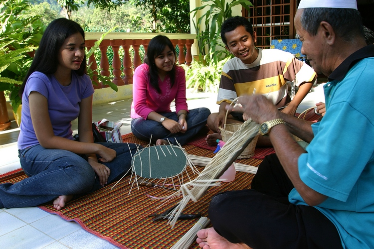
此大廈位於LABU路上，其總面積共有4公煩，是一座典型的傳統米南加保式建築風格。森美蘭州內的許多手工藝品及歷史文物都在此展示出來，保留了森美蘭豐富的歷史文化傳統。
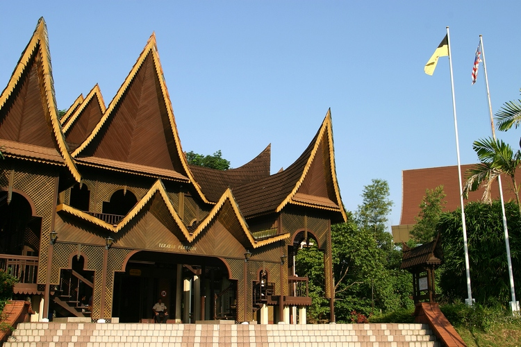 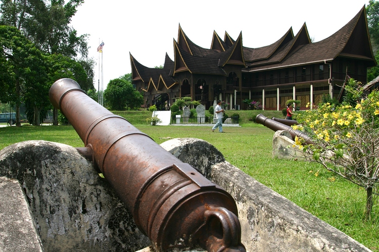

此館就座落在文化手工藝品大廈的範圍內，它是由舊木造皇宮改成的。這座皇宮的原址是在AMPANGTINGGI村，當年興建時所有的建築材料是以木材為主的。 此館展示的古文物包括：武器、黃銅制品、錫器及一個大型皇室婚禮的戲劇性場面等。博物館旁邊有一棟“米南之家”，是完完全全仿造一棟米南加保的房子。一座舊古堡，KEMPAS古堡的巨石置在大廈範圍的土地上。
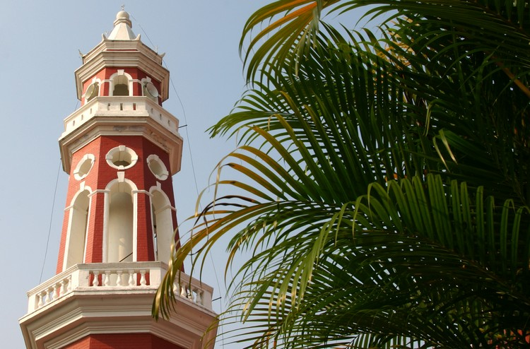 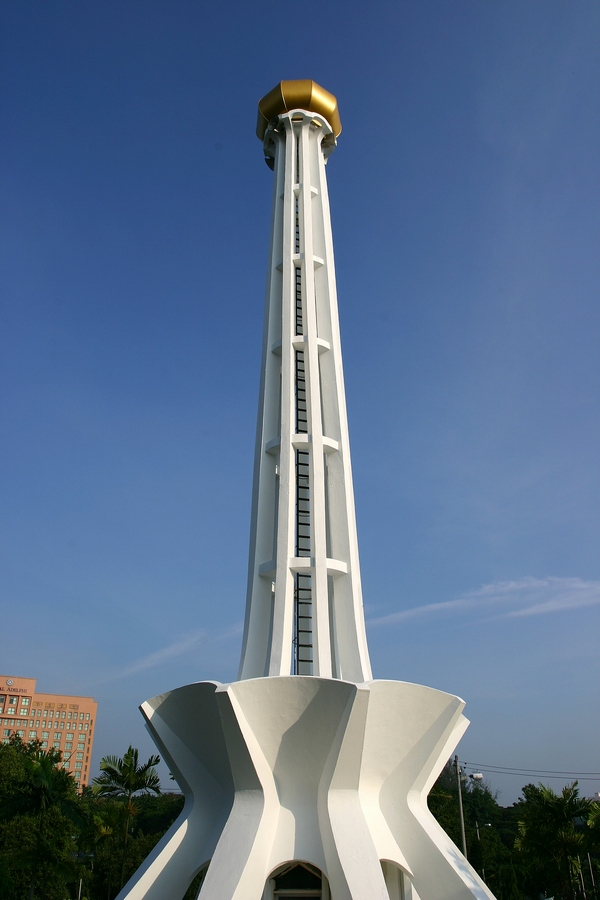
此座州清真寺建有９個支柱，象徵著州內的９個區域。這是一座比較現代化的清真寺，由此可以看到芙蓉湖及圍繞清真寺四周的公園。
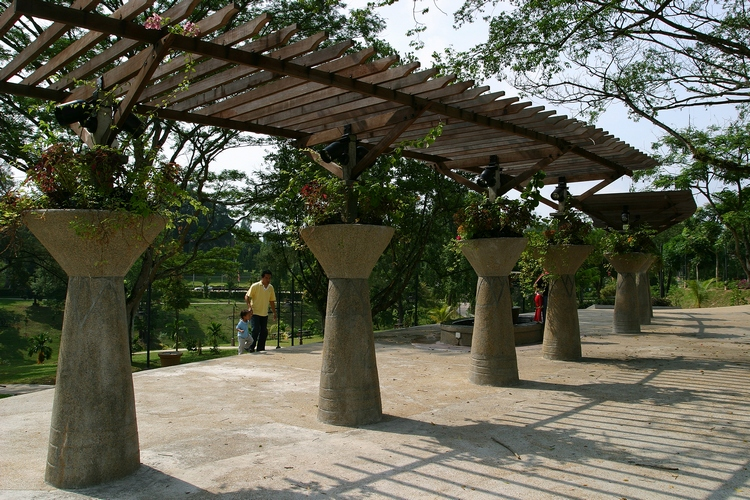 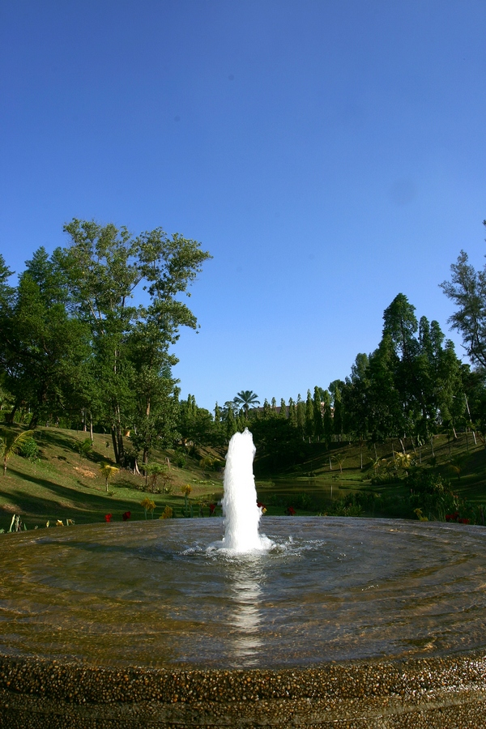
這座如詩如畫的公園，擁有綠意盈然的景色及精心規劃的漂亮草坪。公園內有慢步跑道及一座兒童玩樂場。
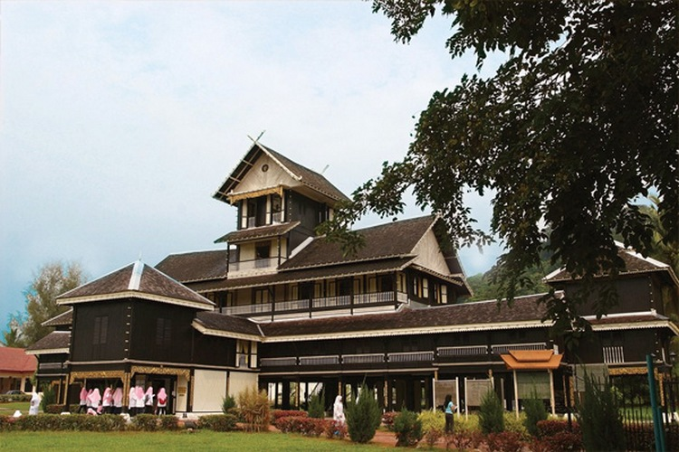 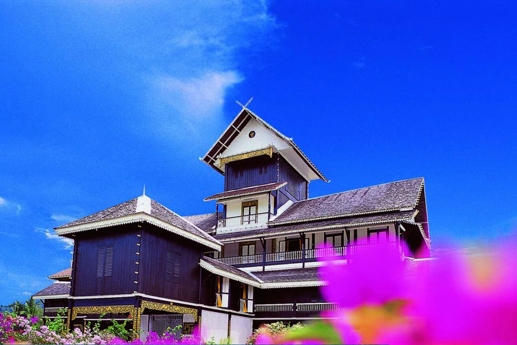 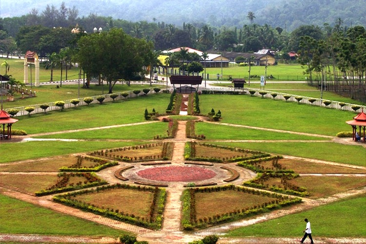 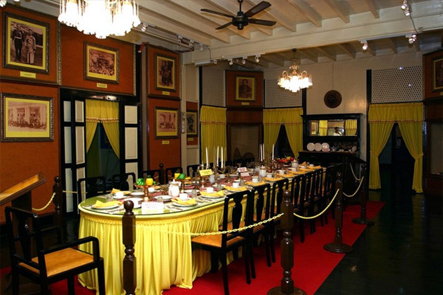 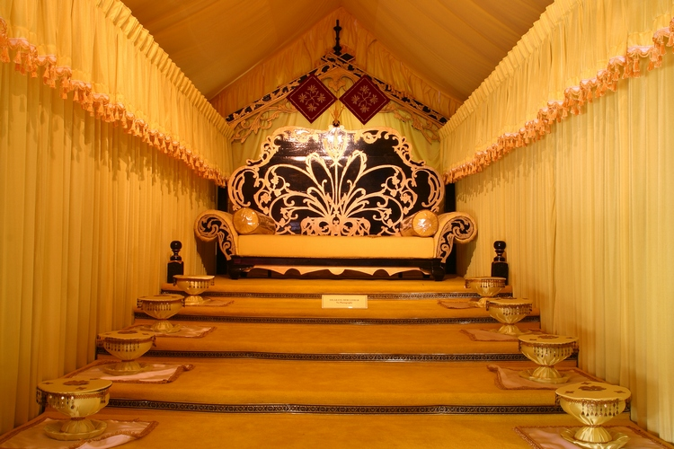
SRI MENANTI皇宮建於20世紀初，是為了取代焚燬的舊皇宮而建。1992年時，這座皇宮被改為皇室博物館後，就不斷的吸引了很多遊客到此參觀，成為著名的旅遊景點。
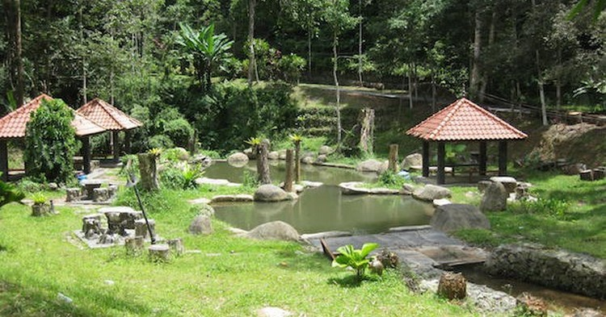
烏魯本多休閒公園位於BUKIT ANGSI山腳下，即從瓜拉庇勞通往神安池皇宮的半路上，距離芙蓉市大約16公哩。此公園是森美蘭州為促進“生態旅遊”而設的六大休閒公園之一。 有一條小溪穿過公園，讓人感到精神清爽。這裡還有森林浴小徑、渡假小屋、露營地點等。
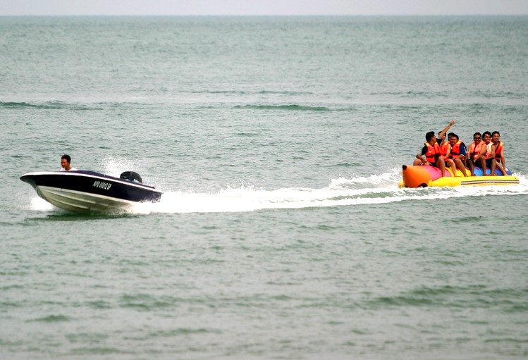 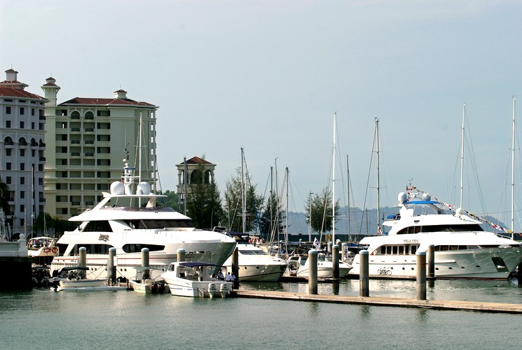 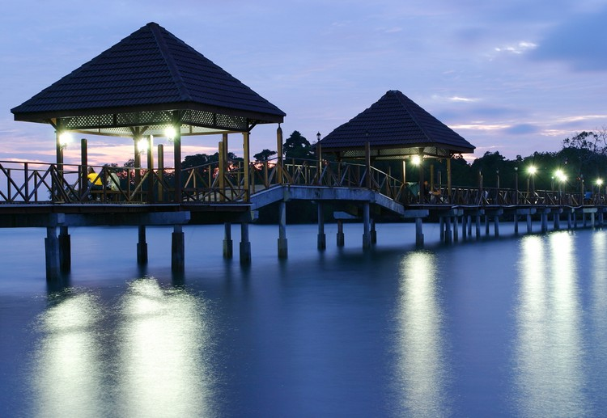
波德申海灘或簡稱PD，逢週末就會有許多來自馬六甲及吉隆坡的遊客到此遊玩。波德申位於PANTAL LAUT縣，距離芙蓉市大約32公哩，是馬來半島其中一個最漂亮的海灘。 全長18公哩的海灘上，到處可見木麻黃樹，同時有好幾處可供游泳的地方。此海灘可進行水上活動如:乘帆船出海、划獨木舟、滑浪及滑水橇等。 波德申最熱鬧的季節是每年8月，這裡會舉行盛大的“波德申嘉年華會”。這個一年一度的歡樂季節，常會舉辦水上運動表演或比賽以及舉行文化表演等等，吸引了許多遊客到來參觀。 這裡交通亦非常便利，波德申鎮上就有公共巴士及德士，定時通往各著名的海灘地區。
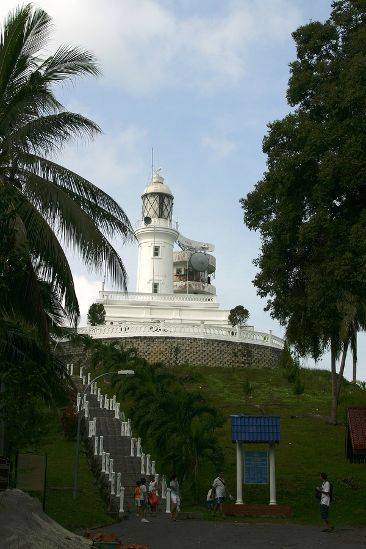
位於藍珊瑚灣Blue Lagoon附近的丹絨端 anjung Tuan，之前被稱為RACHAD 灣，它有一座著名的燈塔，建在陸岬之上，可以俯瞰馬六甲海峽。 天氣晴朗時，由燈塔處望過去，可以看到整個波德申鎮及遠在馬六甲海峽外的蘇門答臘之輪廓。TANJONG TUAN的陸岬亦是著名的候鳥庇護所，是賞鳥人士最喜歡到來的地方。 這片陸岬森林是季候鳥重要的座標，常見的鳥類有:麻雀、老鷹、禿鴈、鵰及褐雨燕。於9月至10月，及3月至4月期間，這裡有好多老鷹及鵰群聚集。
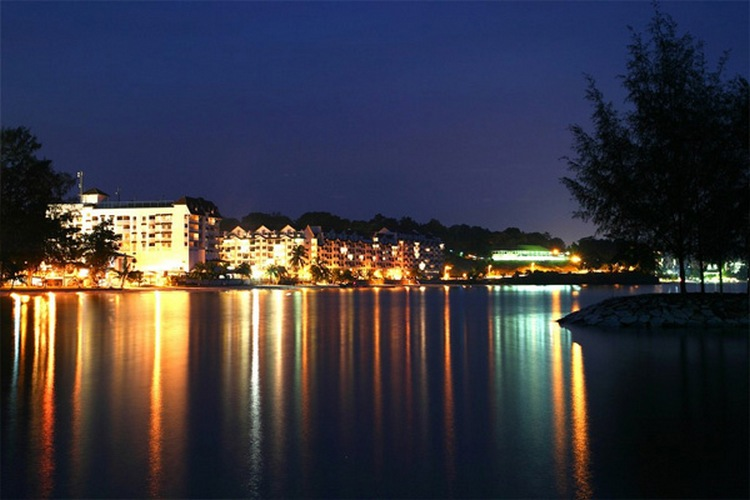
 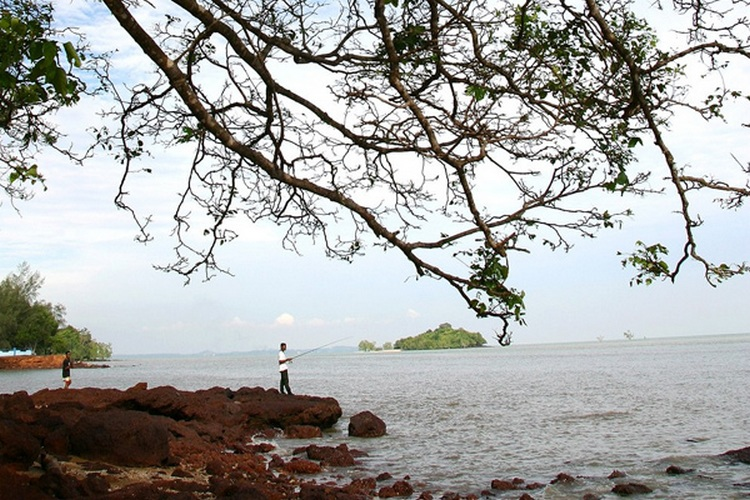
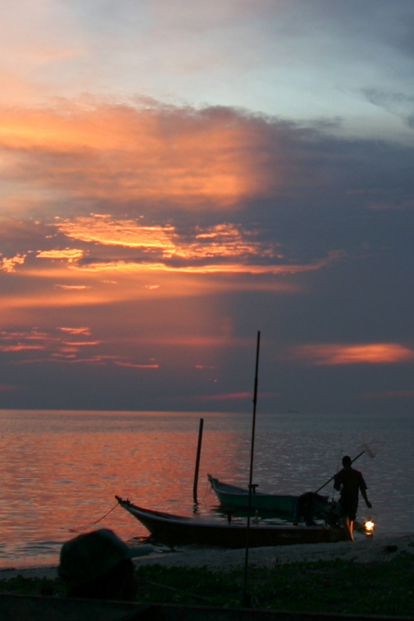
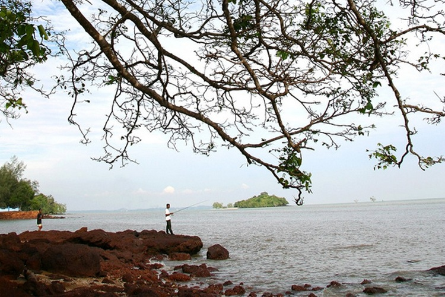
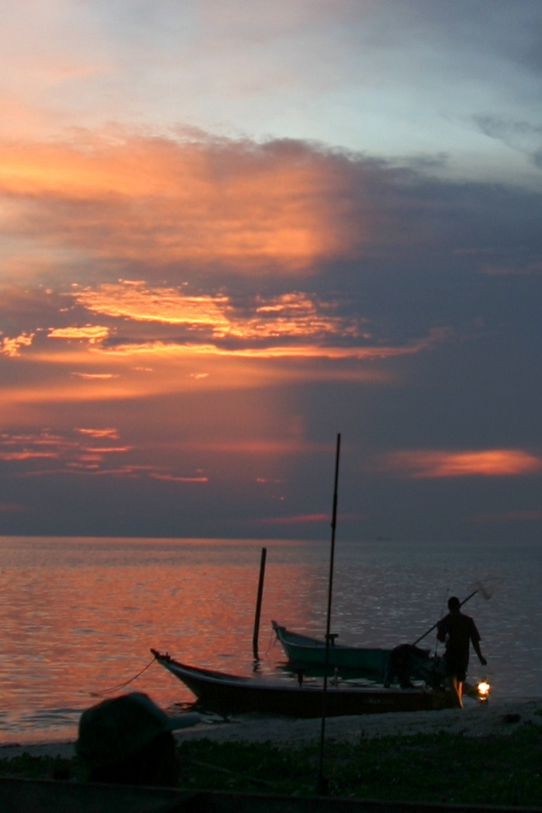
藍珊瑚灣位於波德申鎮15公哩處，其四周圍環境綠意盈然、優美景色，並且可以所賞到漂亮的馬六甲海峽。這座遊樂場提供游泳、划船、滑浪及滑水橇等設施。 這裡有著充滿陽光的活動，歡迎遊客到來暢遊。此處亦有國際級酒店及海邊公寓，遊客可以很舒適的在此留宿。
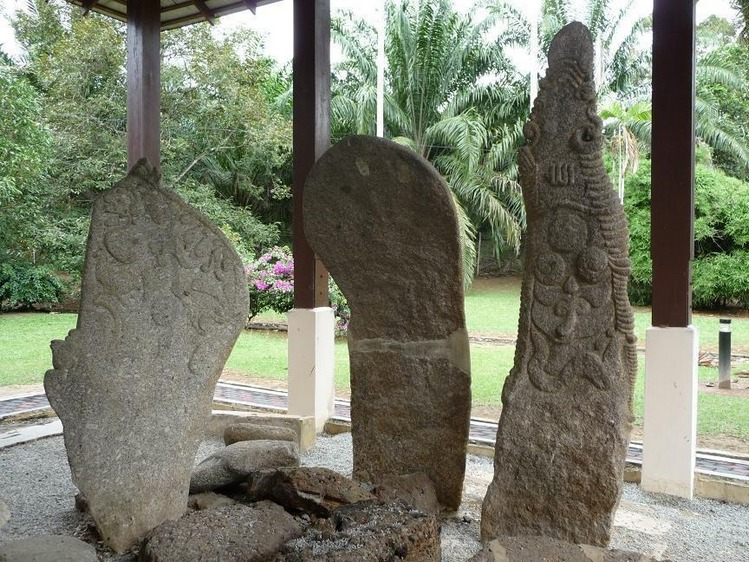
寧宜船頭，距離波德申大約23公哩，是歷史上著名的回教宗教師SHEIKH AHMAD MAKHTUM之墳墓所在地。其墓旁有一座石碑，上面詳載他一生的歷史事蹟。
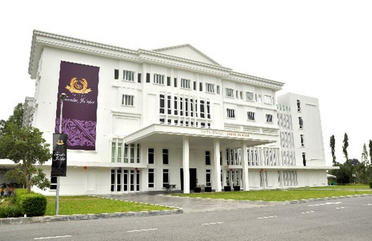
端古•加法爾皇家博物館，是為紀念馬來西亞備受愛戴的國家元首端古•加法爾•伊卜尼•阿卜杜勒•拉赫曼而建。在這間博物館裡，遊客可以透過精心佈置的展覽，近距離瞭解這位偉大元首從童年到執政期間的私人活動與公開生活。 端古•加法爾的執政理念是透過社區工作及保護文化藝術來造福社會。博物館坐落在芙蓉市靜謐的湖畔公園附近，離市區不到1公里。
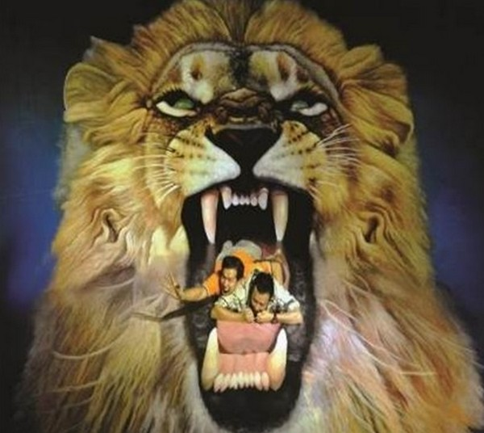
奇幻．不思議3D幻視魔術美術館位於波德申Dataran Segar，館內展出的50項畫作必將迷惑你的雙眼。這些視覺錯覺3D立體畫包括多幅可以在黑暗中發亮的螢光畫，是個人自拍同時也是群體自拍的完美背景! 何不到這裡擺個完美的pose讓你融入這些立體畫中呢？快到這和畫作們來張完美合影吧，獨一無二的視覺效果絕對讓你驚喜不已!